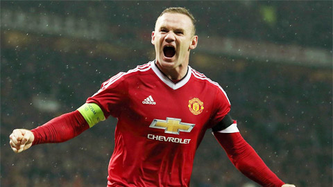
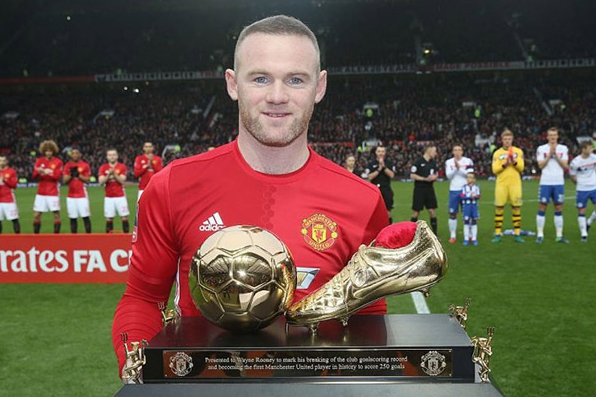

<html>
    <title>linhhoanghoccode</title>

</html>
<head>
    <h1 style="color: blueviolet;"> Wayne Rooney: Hành trình trở thành huyền thoại</h1>
    <br>
        
        
    
</head>

    </p>
<body>

    <p>
        
    <p>
        Wayne Mark Rooney (sinh ngày 24 tháng 10 năm 1985) là một cầu thủ bóng đá người Anh hiện đang chơi ở vị trí tiền vệ tấn công cho câu lạc bộ Derby County tại EFL Championship cũng như từng thi đấu cho đội tuyển Anh ở các trận đấu cấp độ quốc tế. <br> Trước đây vị trí thi đấu của anh là trung phong hoặc hộ công tuy nhiên hiện nay anh thường thi đấu ở hàng tiền vệ.Rooney hiện là cầu thủ ghi nhiều bàn thắng nhất cho đội tuyển bóng đá quốc gia Anh và Manchester United, lần lượt là <strong>53 và 253 bàn thắng</strong> .
   <br>
        <h2 style="color: crimson;">Tuổi thơ </h2>
    
  
    <p>
     Rooney sinh ra ở khu vực ngoại ô phía Đông thành phố Liverpool có tên là Croxteth, trong một gia đình lao động nghèo khó hâm mộ câu lạc bộ Everton. Bố của cậu là Thomas Wayne, mẹ là Jeanette Marie Rooney; cậu có hai người em trai là John và Graeme. <br> Rooney học tại trường tiểu học Our Lady & St Swithin's RC và trung học De La Salle Giống như bố mẹ, Rooney là một người Anh gốc Ai-len[5][6] và cũng là một người hâm mộ đội bóng Everton, cầu thủ mà cậu yêu thích nhất của đội bóng này là Duncan Ferguson.[7][8]

Ngoài bóng đá, Rooney còn đam mê môn quyền anh từ nhỏ, cậu chơi xen lẫn cả hai bộ môn hàng tối. Nhưng đến năm 15 tuổi, khi Rooney gia nhập câu lạc bộ Everton thì các huấn luyện viên ở đó đã bắt buộc cậu phải lựa chọn bởi việc chơi quyền anh sẽ lấy đi rất nhiều sức lực cũng như dễ dẫn tới những chấn thương và Rooney đã quyết định chọn bóng đá.
    </p>
    <br>
    <h3 style="color: crimson;">Bắt đầu chơi bóng tại Everton</h3>
    
    <p>
        Rooney có lần ra mắt đầu tiên trong trận đấu trước Southampton vào tháng 4 năm 2002, trận đấu mà anh chỉ xuất hiện trên băng ghế dự bị mà không được vào sân. Ngày 17 tháng 8 năm 2002, Rooney có trận đấu chính thức đầu tiên ở đội một Everton trong trận hòa 2–2 với Tottenham Hotspur. <br> Ngày 1 tháng 10, anh ghi bàn thắng đầu tiên cho Everton sau khi lập được một cú đúp trong chiến thắng 3–0 trước Wrexham tại Cúp Liên Đoàn. Năm ngày trước sinh nhật lần thứ 17 của mình, anh đã ghi được một bàn thắng đẹp mắt vào đúng phút 90 trong chiến thắng 2–1 trước đội đương kim vô địch Arsenal tại sân Goodison Park. Bàn thắng này khiến cho kỷ lục 30 trận liên tiếp bất bại, và 24 trận không thua trên sân khách của Arsenal bị chấm dứt, còn riêng cá nhân anh lúc đó chỉ mới 16 tuổi 361 ngày và bàn thắng đó đã giúp Rooney lập kỉ lục trở thành Cầu thủ Ghi bàn Trẻ nhất tại Giải ngoại hạng Anh, nhưng kỉ lục này kể từ đó đã bị phá vỡ hai lần; đầu tiên của James Milner cho Leeds (16 tuổi 357 ngày) và sau đó bởi người đồng đội của anh James Vaughan cho Everton (16 tuổi 271 ngày). Sau đó, anh tiếp tục ghi bàn trong trận thắng 1–0 trước Leeds United.[20]

        Trong tháng 12 năm 2002, anh được BBC bầu chọn là Cầu thủ trẻ xuất sắc nhất năm. Đầu năm 2004 ban lãnh đạo đội bóng yêu cầu một hợp đồng 3 năm cùng mức lương 12.000 bảng/tuần với Rooney nhưng đã bị người đại diện của anh từ chối, và điều đó tạo cơ hội cho Newcastle và Manchester United bắt đầu đàm phán để có chữ ký của anh. Trong đó, Everton đã từ chối mức giá 20 triệu £ từ Newcastle và Manchester là người chiến thắng với khoản tiền đưa ra là 25.6 triệu £. Đó cũng là số tiền lớn nhất một đội bóng từng trả cho một cầu thủ dưới 20 tuổi trong lịch sử (lúc đó Rooney 18 tuổi).
    </p>
   <br>
    <h3 style="color: crimson;">Trở thành huyền thoại trong màu áo MU</h3>
    
    <p>
        Nổi lên trong màu áo Everton, Rooney đã thu hút sự quan tâm của nhiều ông lớn, trong đó có Manchester United. Đội bóng này đã đánh bại sự cạnh tranh từ Newcaste để dành được chữ ký của Rooney, biến anh thành cầu thủ tuổi teen đắt giá nhất thế giới thời điểm đó. <br> Trong trận đấu ra mắt câu lạc bộ trong trận đấu với Fenerbahçe tại Champions League trên sân nhà Old Trafford, Rooney - khi đó mới 18 tuổi - trở thành cầu thủ trẻ nhất ghi hat-trick trong lịch sử Champions League. Bắt đầu từ lần ra mắt lịch sử ấy, Rooney duy trì phong độ cực kỳ xuất sắc trong mùa đầu tiên của mình trong màu áo “Quỷ đỏ”. Anh ghi bàn đầu tiên tại Premier League cho đội nhà trong lần sinh nhật thứ 19 của mình, chấm dứt chuỗi 49 trận bất bại của Arsenal.

        Wayne Roony đã ghi 17 bàn thắng trên tất cả các đấu trường của mùa giải năm ấy, đạt danh hiệu cầu thủ trẻ xuất sắc nhất năm do Hiệp hội cầu thủ chuyên nghiệp trao tặng.
        
        Mùa giải tiếp theo (2005-2006) Rooney được vinh danh là cầu thủ suất sắc nhất năm của Premier League do người hâm mộ bình chọn; đồng thời nằm trong đội hình xuất sắc nhất giải năm đó. Rooney tiếp tục được trao danh hiệu Cầu thủ trẻ xuất sắc nhất năm và là cầu thủ thứ 3 làm được điều này, sau Ryan Giggs và Robbie Fowler.  Vào mùa giải đầu tiên của Rooney, đội bóng đang trong giai đoạn chuyển giao. Tuy nhiên, điều đó không ngăn cản M.U vô đối với 3 chức vô địch Ngoại hạng Anh liên tiếp từ 2007 đến 2009. Rooney đóng góp rất lớn vào chiến tích này với 61 bàn thắng trong 3 mùa giải. Manchester United trở thành đội bóng Anh đầu tiên trong kỷ nguyên Champions League liên tiếp góp mặt tại 2 trận chung kết, trong đó có chiến công đánh bại Chelsea để lên ngôi. Mùa giải 2009-2010, sau khi Cristiano Ronaldo chuyển sang Real Madrid với giá trị kỷ lục thế giới, trọng trách trao cho Rooney. Và sự vắng mặt của ngôi sao Bồ Đào Nha đã là cơ hội để anh có mùa giải tuyệt nhất trong sự nghiệp. 

        Mùa giải này, Rooney ghi 34 bàn thắng trên mọi đấu trường để giúp Man United kết thúc mùa giải ở vị trí thứ 2; ghi bàn thắng quyết định trong chung kết League Cup với Aston Villa. Vào năm 2017, tiền đạo này đã cân bằng kỷ lục 249 bàn thắng của Sir Bobby Charlton tại trận đấu vòng 3 Cúp FA với Reading, sau đó thiết lập kỷ lục ghi bàn mới bằng pha đá phạt tuyệt vời trong trận đấu với Stoke City.

        Khi rời sang Everton, Rooney đã ghi tổng cộng 253 bàn cho MU, một kỷ lục mà có lẽ rất lâu nữa mới có người phá được. 
    </p>
    <h4 style="color: crimson;">Những cột mốc đáng nhớ</h4>
    <p>
       <em style="color: darkblue;">Ghi hat-trick trong lần ra mắt với Fenerbahçe tại Champions League (Mu thắng 6-2 ngày 28/09/2004)</em> 
   <br>
       <em style="color: darkblue;" style="font-size: x-large;">2 năm liên tiếp nhận giải cầu thủ trẻ xuất sắc 2004-2005 và 2005-2006</em> 
  <br>
  <em style="color: darkblue;">3 lần liên tiếp vô địch ngoại hạng Anh và trên đỉnh châu Âu 2007-2009</em>
  <br>
  <em style="color: darkblue;">Cầu thủ của năm 2009-2010</em>
    </p>
    <br>
<h5>Bài viết được tham khảo tại</h5>
<p>
    <a href="https://vi.wikipedia.org/wiki/Wayne_Rooney">bài viết tại wiki</a>
    <br>
    <a href="https://baohatinh.vn/the-thao/wayne-rooney-bat-ngo-chia-tay-everton-chuan-bi-gia-nhap-mls/154234.htm">bài viết tại báo hà tĩnh</a>
</p>

</body>


